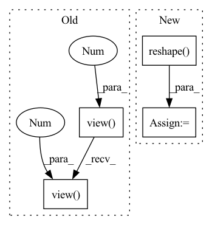

Pattern ID :799
Before Change
oC, iC, kH, kW = self.weight.size()
affined_style = self.style_fc(style)
weight = self.elr_scale * self.weight.view(1 , oC, iC, kH, kW) * affined_style.view(B, 1, iC, 1, 1)
if self.demod:
norm = 1 / ((weight**2).sum([2, 3, 4]) + 1.e-8)**0.5
weight = weight * norm.view(B, oC, 1, 1, 1)
out = F.conv2d(
x.contiguous().view(1, B*iC, H, W), weight.view(B*oC, iC, kH, kW),
stride=self.stride, padding=self.padding, groups=B
)
_, _, H, W = out.size()
out = out.view( B, -1 , H, W)
return out
class Bias(nn.Module):
def __init__(self, out_channels, bias_init=0, lr=1.):After Change
weight = weight * d
// reshaping for conv input
x = x.reshape( 1, -1, H, W)
_, _, *ws = weight.size()
weight = weight.reshape(B*self.out_channels, *ws)
pad = self._get_same_padding(H)
In pattern: SUPERPATTERN
Frequency: 3
Non-data size: 4
Instances Fragment ID: 2881385
Project Name: stomoya/animeface
Commit Name: b3652bae109c713da926d5532eb014b02135da52
Time: 2020-12-14
Author: blackie0110@gmail.com
File Name: implementations/StyleGAN2/model.py
M Class Name: EqualizedModulatedConv2d
N Class Name: ModulatedConv2d
M Method Name: forward(3)
N Method Name: forward(3)
M Parent Class: nn.Module
N Parent Class: nn.Module
M File Name: implementations/StyleGAN2/model.py
N File Name: implementations/StyleGAN2/model.py
M Start Line: 71
M End Line: 87
N Start Line: 109
N End Line: 131
Before Change
// if no NaNs for padding varying trial lengths we can batch the computation
if not torch.isnan(x).any():
trial_embeddings = self.trial_net(x.view(batch * permutation_dim, -1)).view(
batch, permutation_dim, -1
)
combined_embedding = self.combining_function(trial_embeddings, dim=1)
trial_counts = torch.ones(batch, 1, dtype=torch.float32) * permutation_dim
// otherwise we need to loop over the batch to account for varying trial lengthsAfter Change
// Get number of trials from non-nan entries
num_batch, max_num_trials = x.shape[0], x.shape[self.aggregation_dim]
nan_counts = (
torch.isnan(x)
.sum(dim=self.aggregation_dim) // count nans over trial dimension
.reshape( -1) [:num_batch] // counts are the same across data dims
.unsqueeze(-1) // make it (batch, 1) to match embeddings below
)
// number of non-nan trials
trial_counts = max_num_trials - nan_counts
// get nan entries
is_nan = torch.isnan(x) Fragment ID: 2881411
Project Name: mackelab/sbi
Commit Name: 3831fd6d5fda0ca050db8c54868ed30558451042
Time: 2023-03-01
Author: jan.boelts@tum.de
File Name: sbi/neural_nets/embedding_nets.py
M Class Name: PermutationInvariantEmbedding
N Class Name: PermutationInvariantEmbedding
M Method Name: forward(2)
N Method Name: forward(2)
M Parent Class: nn.Module
N Parent Class: nn.Module
M File Name: sbi/neural_nets/embedding_nets.py
N File Name: sbi/neural_nets/embedding_nets.py
M Start Line: 274
M End Line: 300
N Start Line: 279
N End Line: 306
Before Change
item_eb_hat = torch.sum(self.w[:, :self.seq_len, :, :] * u,
-1) // shape=(batch_size, seq_len, hidden_size*interest_num)
item_eb_hat = item_eb_hat.view(-1 , self.seq_len, self.interest_num, self.hidden_size)
item_eb_hat = item_eb_hat.permute(0, 2, 1, 3).contiguous()
item_eb_hat = item_eb_hat.view(-1 , self.interest_num, self.seq_len,
self.hidden_size) // [batch_size, num_interest, seq_len, hidden_size]
// [batch_size, num_interest, seq_len, hidden_size]
if self.stop_grad: // Clip signal for backpropagation, item_emb_hat is not included in gradient calculationAfter Change
item_eb_hat = torch.sum(self.w[:, :self.seq_len, :, :] * u,
dim=3) // shape=(batch_size, maxlen, hidden_size*interest_num)
item_eb_hat = torch.reshape( item_eb_hat, (-1, self.seq_len, self.interest_num, self.hidden_size))
item_eb_hat = torch.transpose(item_eb_hat, 1, 2).contiguous()
item_eb_hat = torch.reshape(item_eb_hat, (-1, self.interest_num, self.seq_len, self.hidden_size))
// [b, in, s, h] Fragment ID: 2881314
Project Name: hasai666/rec_pangu
Commit Name: edb52c9a2e35045250d5fda164df336768f37599
Time: 2023-03-24
Author: wangkai@fuzhi.ai
File Name: rec_pangu/models/layers/multi_interest.py
M Class Name: CapsuleNetwork
N Class Name: CapsuleNetwork
M Method Name: forward(4)
N Method Name: forward(4)
M Parent Class: nn.Module
N Parent Class: nn.Module
M File Name: rec_pangu/models/layers/multi_interest.py
N File Name: rec_pangu/models/layers/multi_interest.py
M Start Line: 102
M End Line: 172
N Start Line: 94
N End Line: 154